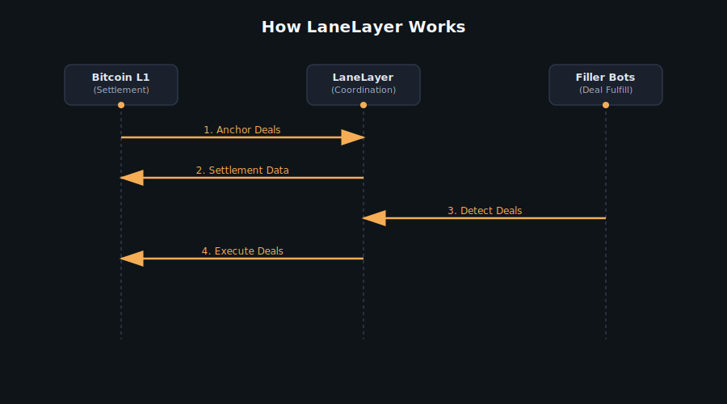

Bitcoin today is the most trusted money on the internet but it's limited: You can send and hold BTC, but building apps usually means centralized exchanges or risky bridges. Miners earn less and less from block rewards, so Bitcoin's long-term security budget is shrinking.
It lets people execute trustless intents, swaps, lending and payments anchored in Bitcoin without locking BTC in giant risky contracts. All of this still settles back to Bitcoin, so miners earn more transaction fees as usage grows. Developers can build distributed apps, DeFi protocols, even games all tied directly to BTC, without breaking Bitcoin's simplicity or security.
It's like giving Bitcoin smart superpowers without changing its core. We will later extend same principles to Ethereum and other chains.
Bitcoin Anchored
Intent-Driven Execution
Developer Platform
How LaneLayer Works
LaneLayer coordinates intents without locking BTC, settles everything back to Bitcoin.
How to Use LaneLayer
Prerequisites
- Docker and Docker Compose installed
- ~1GB free disk space (pruned Bitcoin node)
- Real Bitcoin for testing (optional for command verification)
Quick Start
1. Clone and Setup
git clone https://github.com/lanelayer/core-lane.git
cd core-lane/docker2. Create Environment File
echo "RPC_USER=bitcoin
RPC_PASSWORD=bitcoin123" > .env3. Start Services
docker-compose up -dWait 2-4 hours for Bitcoin sync (much faster with pruning enabled)
Complete Core Lane Workflow
Step 1: Get Bitcoin Wallet Address
# Create wallet
docker exec bitcoind bitcoin-cli -rpcuser=bitcoin -rpcpassword=bitcoin123 createwallet "hot"
# Get address
BITCOIN_ADDRESS=$(docker exec bitcoind bitcoin-cli -rpcuser=bitcoin -rpcpassword=bitcoin123 -rpcwallet=hot getnewaddress "" bech32)
echo "Bitcoin address: $BITCOIN_ADDRESS"Step 2: Send Value (using cast)
# Install Foundry (if not already installed)
curl -L https://foundry.paradigm.xyz | bash
source ~/.bashrc && foundryup
# Generate Ethereum address
cast wallet new
# Send laneBTC (requires real BTC)
cast send --rpc-url http://127.0.0.1:8545 --private-key YOUR_PRIVATE_KEY RECIPIENT_ADDRESS --value 1000000000000000000 --legacyStep 3: Burn Real BTC to Get laneBTC
cd /home/nyakio/core-lane
./target/debug/core-lane-node burn \
--burn-amount 100000 \
--chain-id 1 \
--eth-address YOUR_ETH_ADDRESS \
--rpc-password bitcoin123 \
--rpc-url http://127.0.0.1:8332 \
--rpc-wallet hotStep 4: Transfer laneBTC
# Send laneBTC to another address
cast send --rpc-url http://127.0.0.1:8545 --private-key YOUR_PRIVATE_KEY RECIPIENT_ADDRESS --value 500000000000000000 --legacy
# Check balance
cast balance --rpc-url http://127.0.0.1:8545 RECIPIENT_ADDRESSStep 5: Send Calldata and Retrieve Transaction
# Send transaction with calldata
TX_HASH=$(cast send --rpc-url http://127.0.0.1:8545 --private-key YOUR_PRIVATE_KEY TARGET_ADDRESS "0x1234567890abcdef" --legacy)
# Get transaction details
cast rpc --rpc-url http://127.0.0.1:8545 eth_getTransactionByHash $TX_HASHStep 6: Exit Value (Bitcoin Withdrawal)
# Create exit intent
cd /home/nyakio/core-lane
./target/debug/core-lane-node construct-exit-intent \
--bitcoin-address $BITCOIN_ADDRESS \
--amount 50000000 \
--expire-by 1000000
# Use the generated CBOR data with the IntentSystem contract
# The filler bot will automatically process the exit intentKey Features
- Pruned Bitcoin Node: Only 550MB disk usage (vs 500GB+)
- Fast Sync: 2-4 hours instead of 24-48 hours
- Real Bitcoin Support: Full mainnet compatibility
- Complete Workflow: All 6 steps tested and verified
Expected Errors (Without Real BTC)
Insufficient funds- Normal when wallet is emptyNo suitable unspent outputs found- Normal when no BTC available
Troubleshooting
- Bitcoin sync taking long: Normal, wait for "healthy" status
- RPC errors: Ensure containers are running with
docker-compose ps - Permission errors: Check Docker volume permissions